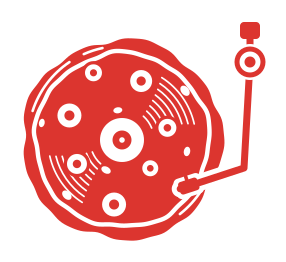

Dernières commandes
| N° | Contenu | Total | État |
|---|
À enfourner
À faire 0
Au four 0
Prêtes 0
C'est prêt
Les soirées
La pizza finance la culture.
Bake That Track, c'est une bande d'amis de Liège qui fait des pizzas pendant qu'un DJ construit la soirée. La musique n'est pas un fond sonore : elle donne son nom aux pizzas, passe par le micro, rythme le service. La cuisine ouvre la porte, la musique et les artistes donnent la profondeur.

Ce qu'on est
- Un collectif qui conçoit et anime des soirées autour de la pizza et du disque.
- De la street food de qualité, à prix accessible.
- Un DJ set soigné, éclectique, plutôt souterrain, qui fait partie de la soirée.
- Une petite fabrique à formats : menus thématiques, collaborations avec des lieux et des cuisiniers, mixtapes, performances.
- Des gens qui le font aussi pour le plaisir d'être ensemble.
Ce qu'on n'est pas
- Une pizzeria à la carte ouverte tous les soirs.
- Un concept gastronomique à prix qui intimident.
- Un stand de bouffe posé à côté d'une soirée DJ.
- Une machine à volume qui prend toutes les commandes au détriment du plaisir et de la qualité.
Une soirée, vue du public
On vient pour tout à la fois : une pizza, un set, un lieu ou une collaboration qu'on découvre, et des gens aux commandes qui font partie de la fête. Le menu est court, le nombre de pizzas est fixé à l'avance, et quand il n'y a plus de pâte, on arrête. Ce n'est pas un échec à cacher : c'est le moment où la soirée passe à autre chose.
On commande à la caisse, on garde son ticket, et on écoute : le numéro passe au micro, dans la musique, avec une phrase qui change.
La musique
Musiques électroniques, rare groove, italo disco, new wave et post-punk, hip-hop, classiques rock ou électroniques des années 80 à aujourd'hui : la sélection change avec la soirée, et ne s'enferme dans aucun genre. Un set construit, avec des ruptures, de la lenteur qui danse, des transitions, parfois des instruments et du sampling.
Le micro est un instrument de plus : annoncer une pizza, appeler une commande, ponctuer un geste, sans couper la musique.
L'argent
Les soirées doivent valoir le temps et l'énergie qu'on y met, sans perdre l'accessibilité. Trois formules ont été discutées : un cachet pour l'animation plus la vente des pizzas ; un cachet « tout compris » ; et, selon le lieu et après accord, une part de la gestion du bar.
Côté public, l'idée est un prix unique abordable, avec un complément libre pour financer la culture, plutôt que des tarifs qui étiquettent les gens. Les modalités restent à confirmer avant toute annonce.
Ce qu'on explore
Des pistes, pas des engagements : un format de fin de soirée, Digesto Club, quand les pizzas sont finies ; une académie pour transmettre la méthode à des personnes de confiance si la demande dépasse l'équipe ; une mixtape à prix libre pour alimenter un fonds destiné aux artistes et aux prochaines soirées.
Comment on s'organise
Repères tirés des soirées passées, pas des garanties : chaque lieu change la donne (fours, puissance, froid, espace).
Le trajet d'une commande
Caisse
On prend la commande, on encaisse, on donne le ticket avec son numéro.
Écran CaisseÀ faire
La commande arrive en cuisine. On regroupe : combien de parts de chaque pizza attendent.
Écran CuisineAu four
La pizza est enfournée. On voit depuis combien de temps chaque commande attend.
Écran CuisinePrête
Carillon chez toute l'équipe, numéro géant à l'écran, voix dans la sono.
Écran d'appelServie
Le ticket repart avec sa pizza. La commande sort de l'écran.
Écran CuisineLes postes
Les rôles tournent entre pizza, mixage et instruments ; ce qui compte, c'est que chaque poste soit tenu à chaque instant.
Pâte
Sort les pâtons du froid au bon rythme, étale, tient le compte de ce qui reste.
Regarde : Cuisine, compteur de pâtonsFour
Garnit et enfourne, surveille la pierre, sort les pizzas et passe la commande en « prête ».
Utilise : CuisineFinitions
Coupe en quatre, met la finition de croûte (huile, pesto, herbes), remet la pizza contre le ticket.
Utilise : Cuisine, « Servie »Caisse et micro
Prend les commandes, encaisse, donne les tickets. Relance un appel si quelqu'un n'est pas venu.
Utilise : CaisseDJ
Tient le set. L'écran d'appel est branché sur la table : la voix des commandes passe dans la musique.
Branche : Écran d'appelLe parcours d'une date
Avant
- Accord avec le lieu, et ses contraintes : fours, électricité ou gaz, froid, espace.
- Format, public, horaires, prix, objectif financier.
- Menu court et quantités, à partir du nombre réel de pizzas.
- Pâte : pétrissage, fermentation, stockage au froid.
- Matériel de cuisson et de son, chargement du van.
Le jour J
- Répartition des postes, et qui tourne quand.
- Circulation : file, caisse, sortie des pizzas.
- Annonces, set, interactions avec le public.
Dans l'appli : choisir la soirée en cours, ouvrir la Caisse, la Cuisine et l'Écran d'appel sur trois appareils.
Après
- Nettoyage, transport, et bilan : l'onglet Soirées calcule les pizzas vendues et la recette à partir des commandes.
Le van : VW Transporter T6.1 court. Tout ce qui part (four, déco, deck) doit y tenir et se monter vite.
La checklist détaillée de chaque date se coche dans l'onglet Soirées.
Le service, réglé une fois
Menu court. Trois pizzas au plus, une base commune déclinée, des finitions rapides et reproductibles.
Quantité fixée. Le nombre de pâtons est décidé avant la soirée ; l'appli le décompte à chaque vente et prévient quand il en reste peu.
Fin de la pâte, fin des pizzas. La caisse se ferme d'elle-même, l'écran l'annonce, la soirée continue autrement.
Plus de demande ne veut pas dire plus de volume. Toute hausse se juge à la pâte, au four, au service, et au plaisir de l'équipe.
L'appli sur vos téléphones
Envoie le lien sur le groupe WhatsApp de l'équipe : chacun l'ouvre, l'installe, puis entre le code d'équipe une seule fois. Les commandes passent ensuite en direct d'un téléphone à l'autre.
Les notifications arrivent tant que l'appli est ouverte ou vient d'être mise en arrière-plan. Les clients, eux, suivent leur commande par le QR montré à la caisse, sans rien installer.
Les phrases d'appel
Quand une commande passe en « prête », l'écran d'appel dit l'une de ces phrases, à tour de rôle. {n} est remplacé par le numéro ; si le client a donné un prénom, il est dit en premier. Une phrase par ligne, courte : la répétition fait le rituel.